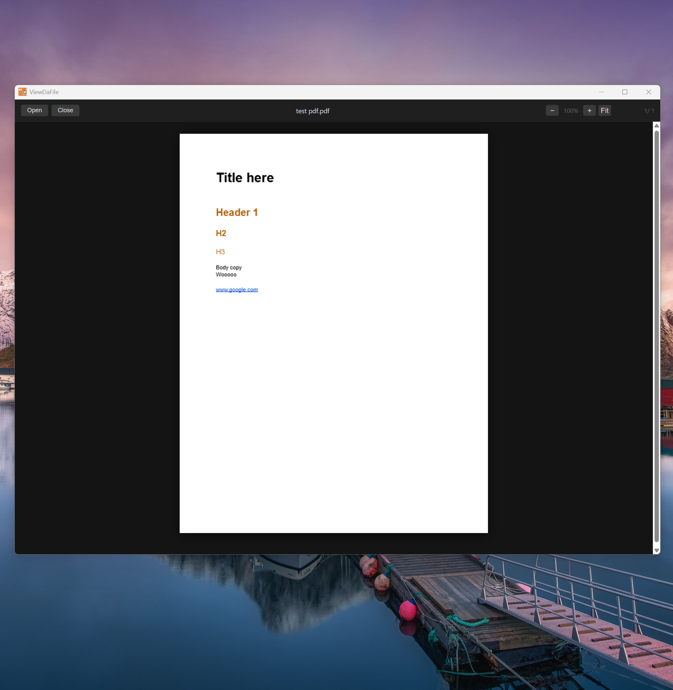

Personal Project · 2026
ViewDaFile: A Minimal PDF Viewer for Windows
Every PDF reader I owned wanted to be something more. ViewDaFile is a native Windows app that does exactly one thing — opens PDFs — and stays out of the way while it does it.
Why I Built It
Adobe Acrobat is the canonical answer, but it's also a subscription, an update prompt, and a toolbar full of things I never use. Alternatives in the same weight class have similar problems: they're either feature-stuffed or they wrap a browser engine and feel like it. I wanted something that opened fast, scrolled smoothly, and looked like it belonged on a dark desktop — not like a web page with a title bar bolted on.
The other half of this was a learning opportunity for me. I wanted to build a native Windows exe. I'd been shipping browser-based tools (BPM Finder, Grab, Convert Stuff) and wanted to understand what the Tauri stack felt like for a real use case. A PDF viewer is small enough to be tractable but real enough to matter — it has to handle rendering, user input, file system access, and persistence. All the pieces that test whether a framework is actually usable.
Key Features
TBH, nothing unexpected here. It's just a lightweight PDF viewer.
Continuous scroll is the default reading mode. Pages flow top to bottom without clicking between them, which is how I actually read documents. Individual page mode is available when you need it.
Text selection works the way you'd expect — click and drag to select, copy with Ctrl+C. No mode switching, no toolbar toggling.
Clickable links open in the system default browser. Internal document links jump to the right page. Neither required any user configuration.
Zoom is handled via Ctrl+Scroll or the keyboard shortcuts you'd use anywhere else. The viewport stays centered on whatever you're looking at rather than snapping to the page edge.
Recent files are persisted locally so reopening a document is one click. No account, no cloud sync, no setting up a library. The list lives on your machine.

What Tauri Was Like
Tauri's pitch is a native shell around a web renderer, with Rust handling the system layer. For a PDF viewer that meant: PDF.js does the rendering in the webview, Rust handles file system access and IPC, and the OS provides the window chrome. The output is a single installable EXE under 10MB — dramatically smaller than an Electron equivalent.
The friction was mostly in the Rust learning curve for the IPC layer, not in Tauri itself. Once the file-open dialog and recent-files persistence were wired up, the rest was vanilla JS against a PDF.js canvas. The dark theme is CSS. The whole renderer is a web page that happens to have file system access and a real title bar.
The result feels native because it uses native OS controls where it matters — window management, system dialogs, keyboard shortcuts — and otherwise stays out of the way.
What's Not In It
No annotation tools. No form filling. No sidebar panels. No bookmarks UI beyond recent files. None of these are planned for v1. The goal was a PDF viewer that opened immediately, rendered correctly, and didn't require a tutorial. Feature scope is a product decision — the discipline here was resisting the pull toward "while I'm at it" additions that would have made it heavier without making it better for the use case it actually covers.